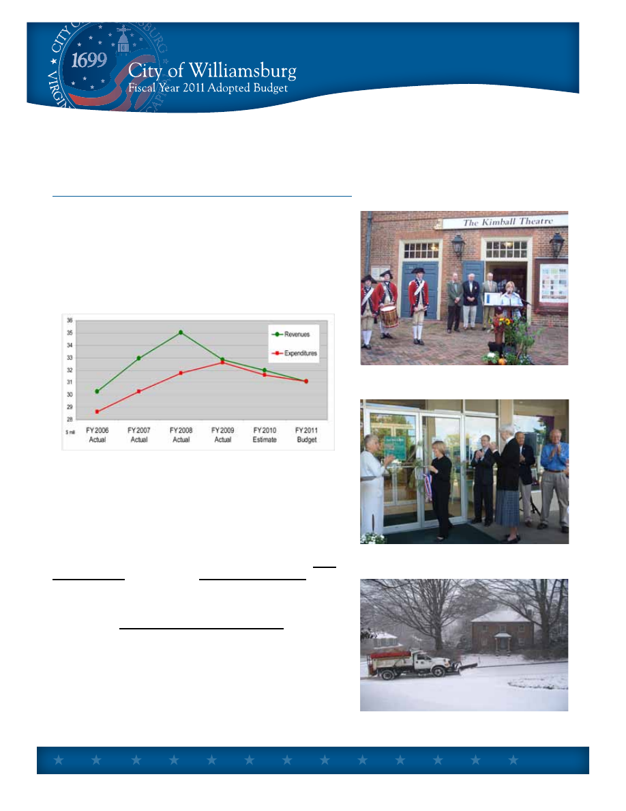
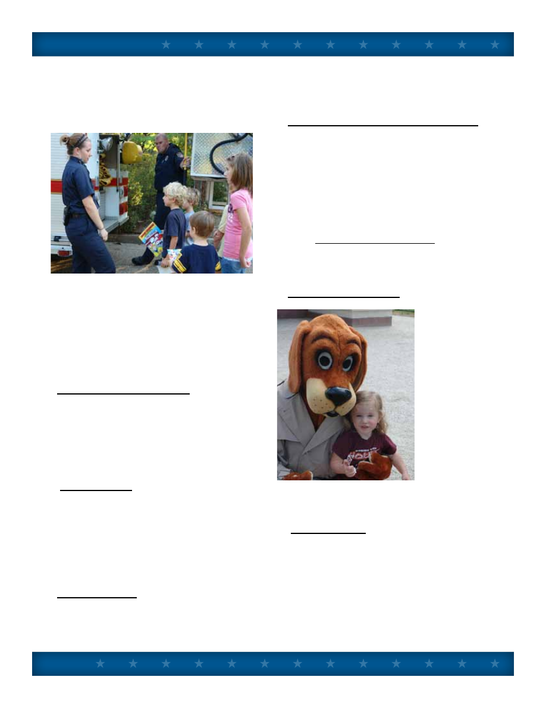
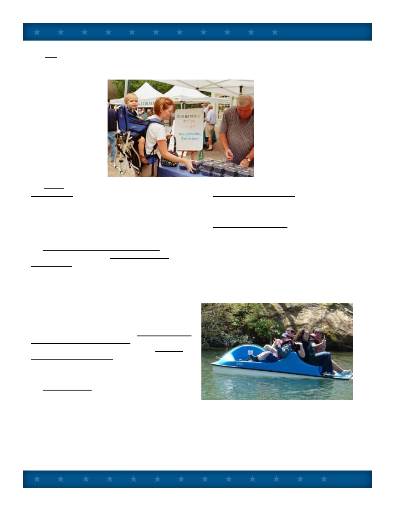
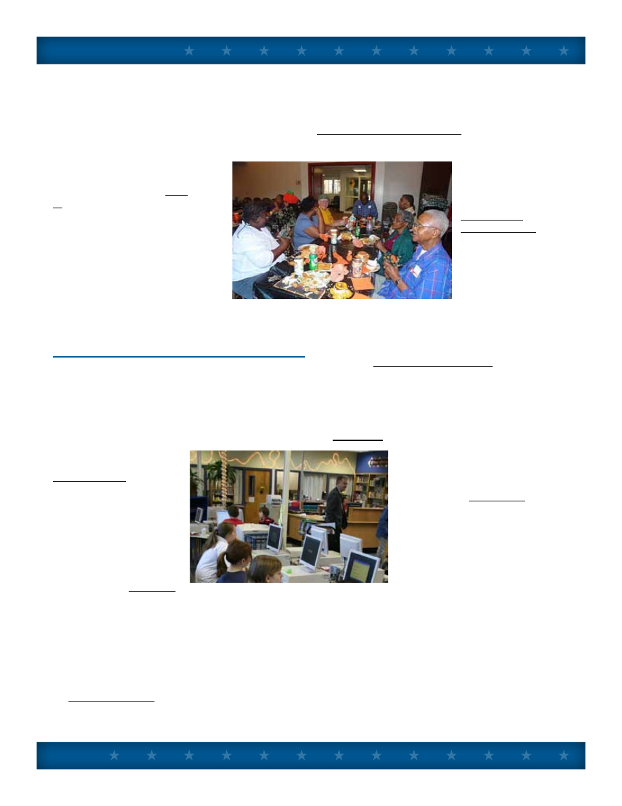
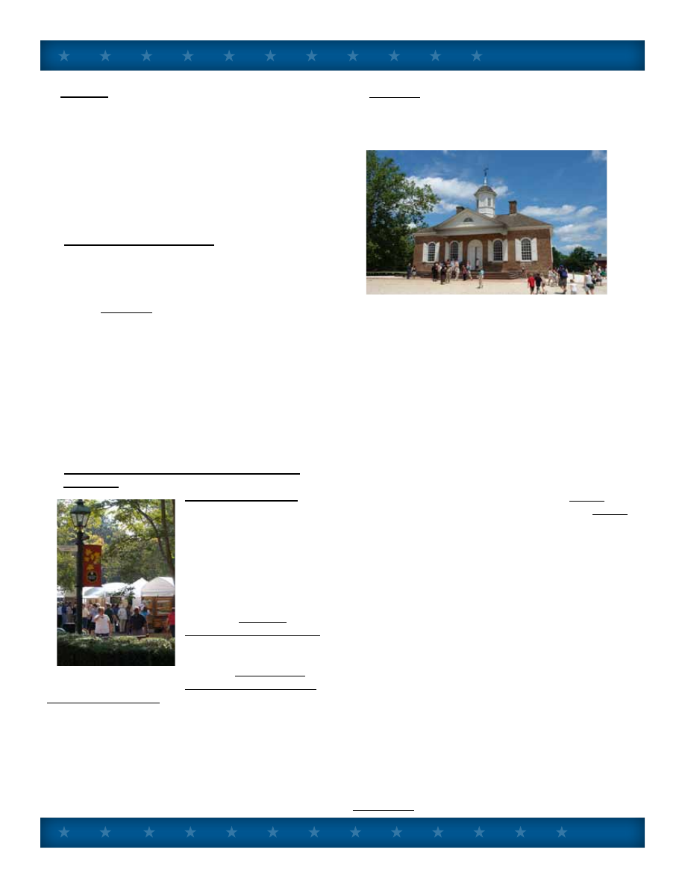
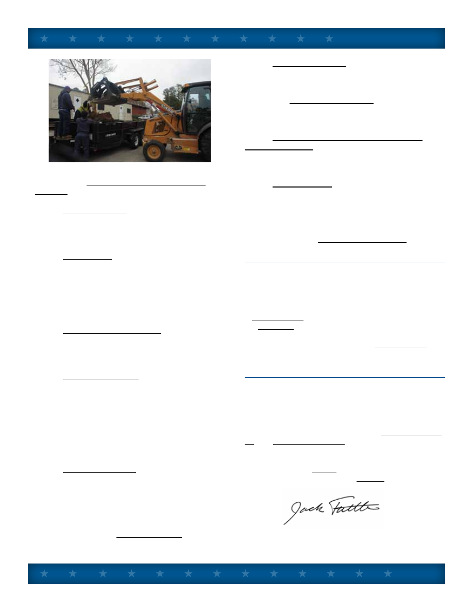

TO:
Mayor and City Council
DATE:
March 19, 2010
SUBJECT: City Manager’s Budget Message
INTRODUCTION
As the recession continues, the effect on government
revenues at all levels deepens. Next year we anticipate a
further decline of 3.2% which, when added to last year’s
decrease, will result in a General Fund operating budget in
Fiscal Year 2011 that is 8.9% less than the budget adopted
two years ago.
The chart below shows the path of General Fund operating
revenues and expenditures since FY 2006:
Over the last eighteen months the city has been in serious
budget reduction mode. Nevertheless, the city remains
committed to advancing the strategic community priorities of
City Council and improving the financial and organizational
strength of city government.
The FY 11 proposed budget is about much more than cuts. It
is about moving forward in difficult economic times. So, the
place to start in understanding the proposed budget is
City
Council Goals (Tab Two) and Performance Metrics (Tab
Three).
Looking now at the overall picture for the year ahead,
the Proposed
General Fund Operating Budget can be
summarized by:
•
Projected Revenues of
$31,077,012, down by 3.16%.
•
Planned Spending of
$31,077,012, down by 3.16%.
•
No recommended change in Tax Rates.
•
Number of full time equivalent authorized positions
reduced from
202 in FY 2009 and 185 in 2010, to 182
in FY 2011.
•
No annual pay increases for city employees.
Budget Message
A-1

Budget Message
In the
Utility Budget, recommended is a 5% Water
and Sewer rate increase, from $4.00 to
$4.20 per one
thousand gallons, beginning July 2010, per the Five
Year Water and Sewer Rate Analysis. The rate increase
has been expected as part of the cost of participation
in the long term water supply agreement with Newport
News.
In the General Fund
Capital Improvement Program, a
total of
$3,989,967 is projected in new capital spending
and including debt service.
The combined total of the four funds – General
Operating Fund, Utility Fund, Sales Tax/Capital
Fund, and, now shown as a separate fund, the Public
Assistance Fund – amounts to
$44,504,896.
With the above as an overview, the remainder of the
Budget Message discusses a number of issues that are
particularly helpful in understanding and reviewing the
proposed budget, beginning with General Fund revenue
projections.
REVENUE PROJECTIONS
Next year (FY 2011) we forecast General Fund
revenues of $31,077,012, a 3.1% decrease from the
current year (FY 2010) budget amount. The four
broad categories of revenue are all down:
FY 2010
Adopted
Budget
FY 2011
Proposed
Budget
Percent
Change
All Property taxes
$ 12,949,320 $12,695,020 (1.96%)
Other Local Taxes
$ 13,658,600 $ 13,140,600 (3.79%)
Fees and Charges
$ 2,754,393
$ 2,587,324
(6.07%)
Intergovernmental $ 2,728,200
$ 2,654,068
(2.72%)
Behind the
Budget Guide tab is a detailed
explanation of revenues, explaining the legal basis
and ten year trends of all revenue sources. The
following is a summary of significant revenue changes
in next year’s budget under the four categories:
1.
Property Taxes. Property tax projections are
based on a total anticipated value of real estate of
$1.845 billion dollars, a decrease from current land
book values of 2.5%. Assuming no change in the
tax rate of $.54 per hundred dollars of assessed
value, we estimate real property tax collections of
$9,850,000 next year.
The future of real estate values is more uncertain
than has been the case in the past due to the nature
of this recession. The assessor has completed
approximately 60% of his work as of mid-March for
the coming annual assessment cycle.
Other property taxes include personal property (car
tax) and business property. Taken together these
categories are near level. All property taxes (real and
tangible) taken together are expected to generate
$12,695,020, a 2.0% decrease.
2.
Other Local Taxes. Other local sources of
taxation include various consumer utility taxes and
franchise fees, business licenses, transient lodging
and prepared food or “room and meal” taxes. Taken
together, other local taxes will generate $13,140,600,
a further 3.8% decrease from the current year’s
disappointing numbers.
The estimate for room and meal tax collections
totals $3,200,000 for room tax, an 8.6% decrease;
and $5,400,000 for meal tax, a 1.8% decrease, from
last year’s adopted budget. These estimates reflect
continued mediocre to poor performance in the city’s
tourism economy.
While there are some hopeful signs on the horizon, it
is too soon to incorporate hopes into our projection.
The room tax estimate does not include the $2.00
destination marketing surcharge for additional tourism
promotion, which is a separate line item in the budget
of $1.5 million.
Taken together, all local sources of taxation are
expected to generate
$25,835,620, a 2.9% decrease
from the current year budget.
3.
User Fees and Charges
User Fees. User fees include license and permit
fees, including building permits, and various
charges for service. Licenses and Permits are
projected to decline further by 13.2% to $158,180
due to the lack of construction activity.
Fines and Forfeitures. This category covers court
fines – mostly for traffic violations, parking fines, and
A-2

Budget Message
code violation fines. It is expected to remain level
at $232,000.
Revenue From Use of Money and Property.
This year’s budget proposes moving interest
income, which is only projected to be $170,000
for the General Fund due to exceptionally low
interest rates, from the Operating Budget to the
Capital Budget. The property rental estimate
is $457,054, a 5.5% decrease, covering the
Community Building, Transportation Center, City
Square, and the Prince George Parking Garage.
Charges for Service. This category covers
recreation fees and other user charges. A
significant increase of 50.1% to $458,328 is
proposed – primarily for new and increased fees
for Waller Mill Park as described below under the
Parks and Recreation subheading.
Miscellaneous Revenue. The largest revenue
item in the miscellaneous category is Emergency
Medical Transport fees enacted five years
ago. Increasing these fees based on Medicare
allowable rates and comparable rates in the region
will allow the budget projection to go up from
$325,000 to $430,000 next year. (The new rates
would be: Basic Life Support $400, Advance Life
Support $475 (ALS1) and $700 (ALS2), and an
$8.50 mileage rate.)
4.
Intergovernmental - Revenue from the
Commonwealth. Revenues from the state
government in the amount of $2,654,068, which
includes support for constitutional officers and
various categorical grants, are estimated to
decrease by 2.7%, based on our predictions of final
state action on the FY 11 budget.
This estimate is based upon no change in VDOT
funding for street maintenance at $1,376,050; a
17% decline in police “599” funding to $329,408;
and a 31% decline to $95,610 in state support for
Commissioner of Revenue, Treasurer and Voter
Registrar.
The estimate of Sales Tax for Education of
$773,000, based on State Department of Education
calculations, is up by 13.7%.
EXPENDITURE ISSUES
Next year we have proposed General Fund
operating expenditures of $ 31,077,012, a decrease
of 3.1% from the current year adopted budget.
Broken down in four large categories:
The following is a summary of significant
expenditure issues:
FY 2010
Adopted
Budget
FY 2011
Proposed
Budget
Percent
Change
City Departments
$ 17,345,855 $16,751,168 (3.4%)
Constitutional Officers
and Judicial
$ 2,006,673 $ 2,113,402 5.3%
Education and Library $ 7,810,692 $7,744,648
(0.9%)
Outside Agencies
and Health
$ 4,864,773 $4,467,795
(8.2%)
1.
Salary Ranges and Pay. Due to declining
revenue, no money is recommended for pay
raises next year. Moreover, despite a 2.0%
increase in the Consumer Price Index for calendar
2009, and a 4.2% increase in the CPI in the prior
year; no general increase in city pay ranges are
recommended either.
2.
Personnel Positions. As explained in greater
detail under departmental headings, the total
number of full time equivalent positions authorized
in city departments deceases from 202 in FY 09,
and 185 in FY 10, to 182 in FY 11. The reduction
has been and will be accomplished through transfer
and reorganization, (including the 13 positions
transferred to York County as part of the E911
consolidation), job consolidations, and reductions in
force.
3.
Health Coverage. The city’s health plan is
largely self-insured. The current provider, Anthem,
is paid a set amount to administer the plan, but the
city keeps savings when actual costs fall below the
“premium,” and pays more when costs exceed the
premium. That liability, however, is capped at 125%
of premiums through excess insurance. Savings to
A-3

Budget Message
date have created a reserve, currently $420,225,
to fund losses should losses exceed the amount
budgeted in any given year. Therefore, we budget
for the expected loss only. We have included a 6%
increase in funds budgeted for health insurance
and the dental reimbursement program over
the current year budget in the total amount of
$1,340,000. We expect the cost will exceed that
and the difference will have to be made up by
increased employee contributions. This spring we
are requesting proposals for health care to obtain
the best deal possible.
4.
Virginia Retirement System. VRS sets the
contribution rate for the city based on biennial
actuarial studies. Our rate beginning July 1, 2010
is proposed to be 16.44%, up 6.1% from the
current contribution rate. Based on our projected
payroll next year, we expect to pay $1,437,000 to
fund employee VRS retirements, nearly the same
as the current budget.
5.
Administration. Six office budgets now
make up the central administration group:
City Council, Clerk of Council/City Manager,
Economic Development, City Attorney and
Human Resources. The total of these budgets
is $1,335,261, a 3.3% decrease. The retirement
of the City Attorney and a plan for one full time
attorney and a part time attorney on retainer has
generated the savings.
6.
Non-Department. This budget in the amount of
$356,550 includes several important expenditure
items not assigned to an office or department,
including “aid to the Commonwealth” ($36,000)
and contingency funds both general ($250,000)
and for economic development ($50,000).
7.
Joint Courthouse and Judicial Functions.
The Joint Courthouse Agreement, dated December
1996, between the city and James City County,
governs cost sharing not only for taking care of the
new courthouse, but for judicial functions related to
the Courthouse, including: Circuit Court, General
District Court, Juvenile and Domestic Relations
Court, Clerk of the Circuit Court, Commonwealth
Attorney, and City/County Sheriff. The Courthouse
Agreement provides that the city and county
will determine population based on the annually
updated Hampton Roads Data Book published by
the Hampton Roads Planning District Commission.
The estimate of city cost is $420,000, a 5%
increase from the prior year.
8.
Police and E911 Service. The Police
Department
proposed budget
is $4,007,619,
down from the
current year by
0.9%. Near level
funding takes
into account
savings from
consolidation of
E911 Emergency
Communications
with York County,
and restoration
of one of the two
police positions
frozen last year.
In the current
budget, therefore, we are one position less than full
strength.
9.
Parking Garage. Based on experience in
the first five years of operation, we have set the
Prince George Parking Garage operating budget at
$120,416. This expense is covered by $200,000
in projected parking garage revenues. Revenues
in excess of operating costs will help pay debt
service on the structure. (The balance owed on
the Parking Garage as of February 2010 was
$4,896,786.)
A-4

Budget Message
10. Fire. The Fire Department proposed budget
is $3,320,670, up from the current year by 1.7%.
Over the past four years, five new firefighter/
EMT positions
have been added.
These firefighters
have helped the fire
department maintain
adequate
on duty staffing given
the constant pressure
of time away for
leave and training.
The deputy fire chief
position, however,
remains frozen.
11.
Code
Compliance. Due to personnel reassignment
and reductions in light of the level of building
activity, this budget will drop an additional 8.9% to
$365,392. The original five person professional
staff of FY 09 was reduced to four full time
positions in FY 10 and three in FY 11.
12.
Regional Jail and Youth Detention. Funding
for the city’s share of the Virginia Peninsula
Regional Jail is expected to be $1,175,415, up
9.0% from the current budget. The city share of
jail costs is based on the average usage rate over
the past five years. Each member jurisdiction
(Williamsburg, James City, York and Poquoson)
pays for their share of the inmate population based
on the location where the offense occurred and
the arresting authority. We expect to pay 17.3% of
local jail costs this coming year. Other detention
related expenditures include: the Middle Peninsula
Juvenile Detention Commission at $70,500, which
is projected to decrease by 11.9%; and Colonial
Group Home Commission (Crossroads Home) at
$76,256, which is level with the current year. Both
are based on amount of usage by city children.
13.
Public Works. Public Works divisional
budgets totaling $3,278,568 (Engineering,
Streets, Refuse Collection, Landscape, Cemetery,
Mosquito Control, Facilities Maintenance) is 10.1%
below the current year amount. A Streets Division
position, and a Landscape Division position will be
eliminated.
The budget reduction is also due primarily to two
major recommendations: The first is a $170,000
reduction in street repaving. Henceforth, street
repaving will be accounted for in the Capital
Budget rather than the Operating Budget.
The second is a planned
reduction in the cost of
the contract with Colonial
Williamsburg Foundation for
maintenance of the Historical
Area streets from $202,000 to
$150,000. This agreement is
being negotiated for a July 1,
2010 renewal date.
Finally, we continue to generate
savings by going to once
weekly refuse collection.
14.
Information Technology. A 14.7% reduction
to $290,100 will result from a less aggressive
program of IT improvements than we would like.
15. Parks and Recreation. The Parks and
Recreation budgets total $1,253,901, a 3.4%
reduction. There are some significant changes
recommended in two programs: Waller Mill Park
and Quarterpath Swimming Pool.
Waller Mill Park is a regional recreational asset on
par with the best state parks anywhere. In order
for the city to continue to keep the park open to
all, I am recommending an entrance/parking fee of
$2.00 per vehicle. The proposed FY 11 Operating
Budget for the park is $231,350. We estimate that
the entrance fee will produce $120,000 in income.
That with $80,000 projected for existing fees (boat
rental, etc.), will yield $200,000 in revenue to offset
$231,350 in expense. Automated gates similar to
A-5

Budget Message
those used at the Prince George Parking Garage
will be installed as the control and collection
method.
Quarterpath Pool currently costs the city
approximately $60,000 annually
to operate net of pool fees. I
am proposing that the hours of
operation be reduced (from noon
to 7 p.m. daily to noon to 5 p.m.
Wednesday through Sunday), and
admission fees increased to $3.00
for children and $4.00 for adults.
Swimming lessons will continue to
be offered in the morning hours.
The reduced hours will lower the
cost of operation to $39,900, and
increase revenue to $12,000,
resulting in a project gap of
$27,900.
OUTSIDE AGENCY ISSUES
Nearly one-half of the city’s General Fund budget
goes to agencies and activities not under City
Council’s direct operational control. Funding
relationships are often complex, and vary in
degrees of funding discretion possible from year
to year. The “Notes on
Funding Relationship,”
contained under the
Budget Guide tab, help
explain the city’s role
in providing financial
support to these agencies
and activities.
Background
documentation from
outside agencies is
provided in the Appendix
of the Proposed Budget,
or provided under separate cover, as in the case of
the School and the Library budgets.
A number of issues concerning outside agency
funding requests for the coming year need to be
highlighted:
1.
Health Services. The four agencies named
below provide health services to city residents,
workers and visitors. The total recommended
funding for FY 11 is $441,105, a decrease of 4.3%
from the current year.
The Peninsula Health District budget request to
the city is $92,466, a 17.5% decrease from the
current year.
The Human Services
Advisory Board
has recommended
Olde Towne
Medical Center
(Williamsburg Area
Medical Assistance
Corporation or
WAMAC) receive
funding of $83,430,
the same as the
current year; and that
the Comprehensive Health Investment Program
(CHIP) receive level funding of $19,349.
Finally, the Colonial Services Board, the agency
through which the city provides mental health and
retardation services to its residents, requests level
funding in city contribution of $245,860, based on
the multi-jurisdictional funding formula.
2.
Schools. Based on the Superintendent’s
proposed budget, and
expectations of State funding,
we can expect a city contribution
to the operational budget in
the amount of $6,979,332,
1% increase from the current
year. The final amount will be
determined by formula as set forth
in the current five-year city/county
Joint School Agreement, effective
since July 1, 2007.
The city’s school population has
increased (from 780 to 791), while the county’s
has decreased (from 9692 to 9640). City children
numbering 791 now account for 7.58% of the
children enrolled in the system. Under the Joint
School Agreement, in FY 11 the city pays a share
equal to its enrollment times a factor of 1.14. So,
the city continues to pay a premium to participate
in the joint system. Based on the current
enrollment split, the city’s contribution is projected
at 8.64% and the county’s 91.36%, of local funding
for the schools.
A-6

Budget Message
3.
Library. The Williamsburg Regional Library is
funded under the revised library agreement with
James City County, effective July 1, 2006. That
agreement calls for funding of operational costs
based on the proportion of circulation by residency.
Based on the library’s figures, the city/county
circulation ratio to be applied in FY 11 is 15.46% city,
and 84.54% county. The Library’s proposed budget
of $5,813,163 is a decrease of 4.1%, which will
result in a reduced city contribution of $750,291.
4.
Human Service Agencies. The city’s Human
Services Advisory Board, as requested by City
Council, has evaluated Human Services Agency
requests for funding, and made its recommendations
to City Council. Their analysis and recommendations
are in the Appendix to the Proposed Budget.
Proposed for next year is a 19.9% decrease from
the current year for a total amount of $81,144. The
proposed budget follows the Human Services Board’s
recommendations in all respects, except in two
cases: The Historic Triangle Senior Center allocation
is reduced from the Board’s recommended $12,777
to $10,000 which covers the “Rides” program; and
$500 for the Senior Services Coalition has been
reduced to zero since this program receives no other
government funding.
5.
Community and Economic Development
Agencies.
Tourism Promotion
The city has supported
tourism advertising and
promotion through Colonial
Williamsburg and the
Greater Williamsburg
Chamber and Tourism
Alliance.
This year Colonial
Williamsburg Foundation
has requested $1,320,000,
level with existing
funding. The Greater
Williamsburg Chamber
and Tourism Alliance, which in turn lends support to
the advertising campaigns of the Williamsburg Area
Destination and Marketing Committee (WADMC),
has also requested level funding of $880,000.
Due to sharp declines in room and meal tax dollars
and the inability to make up all the difference from
other sources, I recommend that the city decrease its
current $2.2 million support for CWF and the Alliance
by $300,000. The resulting $1.9 million constitutes
59% of the room tax expected in FY 11.
I further recommend that the city change its
traditional 60/40 split between CWF and the Alliance
to 67/33, resulting in $1,273,000 for CWF, and
$627,000 for the Alliance, for the following reasons:
a. The city’s market share reflected in room tax
receipts has slipped significantly in recent years
compared to our adjoining counties. The city’s ability
to fund the regional effort through the Alliance and
WADMC has waned. In the last full fiscal year FY 09
room tax receipts were: Williamsburg $3,574,810,
James City County $2,764,063, and York County
$3,162,169; or City 37.6%, James City 29.1%, and
York 33.3%.
b. Despite Williamsburg only collecting 37.6% of
room taxes last year, in FY 10 it contributed 63.7%
for tourism marketing through CWF or the Alliance.
($2.2 million to CWF and the Alliance, compared to
$850,000 for James City and $400,495 for York.)
c. Unfortunately, but arguably understandable,
neither county contributes any dollars to the Colonial
Williamsburg marketing campaign.
d. Finally, and most importantly, Colonial
Williamsburg is the premier brand name and the
premier “destination driver” for tourism in the Historic
Triangle and in the City of Williamsburg. When it
comes to the difficult choice of how best to promote
and market the destination, Colonial Williamsburg
and Busch Gardens are the drivers.
The proposed budget also includes an estimated
$1,500,000 of pass through funding from the $2.00
room surcharge to the Williamsburg Area Destination
Marketing Committee’s campaign. This brings
the total city tax dollars for tourism promotion to
$3,400,000.
A-7

Budget Message
Economic and Community Development
In addition to tourism promotion, the city support
is recommended for a number of other agencies
that make important economic development
and community development contributions to
Williamsburg. These are listed in the Budget
Summary section. Significant changes from the
current year include:
a. In discussions with the Redevelopment and
Housing Authority Director, it is possible to end the
$35,000 annual city operating subsidy next year.
b. In the past the
city has contributed
to the lease for
TNCC in the
Discovery Center
in New Town,
but that needs to
end for the city to
increase allocations
for support of the
Hampton and
James City campuses as requested.
c. The Williamsburg Land Conservancy is a fine
organization which the city currently supports in
the amount of $9,500. Since the Conservancy
does little work in the city, and James City County
funded them only $5,000 this year, the city should
reduce its funding to a level not to exceed that of
the county.
d. The city had supported the Crossroad
partnership at the $10,000 level until last year when
there was no city funding. I suggest the city return
to funding this organization, but at $2500 instead of
the $5000 requested.
6.
Cultural. The Williamsburg Arts Commission
has again performed the task of receiving,
evaluating, and recommending funding for the
arts. Their report is copied in the Appendix to the
Proposed Budget. They recommend local arts
funding of $124,280, a decrease of 5.0%. Of this
amount, the city contribution would be $57,140.
This assumes a state arts commission challenge
grant of $10,000, and county funding of $57,140.
If either state or county funding is reduced, then this
item could be reduced further.
City sponsorship for the sixth annual “Festival
Williamsburg” is provided, but at a 2.5% reduction
to $48,750, and an allowance of $5,000, reduced
from the $10,000 provided last year, to partially fund
the Virginia Symphony Lake Matoaka Concert at the
beginning of fall term.
7.
Transportation. The Williamsburg Area Transit
Authority, which operates Williamsburg Area
Transport, has requested level funding based on the
Cooperative Agreement between the partners. Our
estimate of the FY 11 cost to the city will not exceed
$265,000, level with the current year. In my view
this allocation should be reduced in collaboration
with our partners to help shoulder some of the
burden.
Under
Transportation
are two
continuing
regional
partnerships
to promote
alternatives to
highway travel.
Continued
support for
Virginians
for High Speed Rail in the amount of $4,000 is
recommended, and $4,245 to provide funds for
the Williamsburg EDA to participate in business
development underwriting for Newport News/
Williamsburg International Airport .
CAPITAL IMPROVEMENT PROGRAM
Revenue to fund the CIP comes from 1% Sales Tax
Receipts, grants, and funds reserved for capital
improvements. Beginning in FY 11 I am proposing
that interest income, estimated at $170,000 for FY
11 on General Fund reserve funds, be used to help
fund capital expenditures. CIP items are explicitly
linked to City Council’s Goals, Initiatives and
Outcomes for the biennium.
Due to estimated Sales Tax Receipts of only $3.8
million, down from a peak over $4.75 million in
FY 07, the CIP has been trimmed down mainly by
deferring projects.
A-8

Budget Message
Here are some of the highlights from this year’s
update of the Five Year Capital Improvement
Program:
•
Annual Repaving in the amount of $300,000
for FY 11 has been moved from the Operating
Budget to the Capital Budget (together with a
revenue item – interest income as noted above).
•
Traffic Signal improvements, depending upon
the pace of traffic growth sufficient to satisfy “signal
warrants,” are now planned in FY 12 for Richmond
Road/Waltz Farm Drive, York Street/Quarterpath
Road projected in FY 13, and Second Street/
Parkway Drive in FY 14 – all most covered by VDOT
Urban Funds and developer contributions.
•
Ironbound Road Widening engineering
money, mostly VDOT Urban Funds, is budgeted for
FY 15, but project construction will not likely occur in
the five year window.
•
Underground Wiring will accompany the
reconstructed portions of Ironbound Road near
Richmond Road. The next major city financed, stand
alone underground project on Page Street, is pushed
back to FY 12. Funds in the amount of $300,000
are budgeted in FY 11 for the Underground Wiring
Improvement Project on Ironbound Road where it
touches the front yards of city residents across from
Tewning Road.
•
Sidewalk Upgrades carried over from FY 10
with VDOT Revenue Sharing assistance are still
pending for various locations, including, along Route
199 east of Jamestown Road, and Nassau Street
tour bus loading area.
•
No park improvement again next year,
but the next phase of Quarterpath Park lighting
improvements is planned in FY 12.
•
E911 Consolidation funding of $45,000
annually will save previously planned spending on a
city E911 center.
•
The Ironbound Fire Station has been
removed from the CIP as no longer operationally
feasible.
•
The Municipal Building Renovation and
Expansion Project, previously funded, is currently
under construction with a spring 2011 completion
date.
•
W/JCC Schools capital needs receive city
funding per the joint school agreement with James
City County.
The Planning Commission’s review of the draft CIP,
used in developing the final recommendation, is
provided under the
Capital Improvements tab.
UTILITY FUND OVERVIEW
The Utility Fund budget calls for $5,890,000 in
operating revenues, and a 2.1% increase. A 5%
water rate increase, $4.00 to $4.20 per 1,000
gallons, is recommended.
A Rate Analysis for the Utility Fund is provided under
the Appendix tab in the Proposed Budget. The
analysis shows a future with rate increases, and a
future with no rate increases. The Rate Analysis is
updated annually as part of the budget process.
NEXT STEPS
The budget process now moves from the staff level,
formation phase, to the Council and public level,
adoption phase.
The Budget Work Sessions, principally to look at
outside agencies, are scheduled for Monday, March
22 and Tuesday, March 23. The school budget will
be reviewed at the Monday, April 5, City Council
work session. The formal budget hearing will be
advertised for the April 8 City Council meeting.
Adoption is scheduled for the May 13 Council
meeting.
Jackson C. Tuttle
City Manager
A-9

This page left blank intentionally